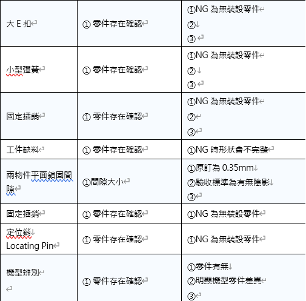
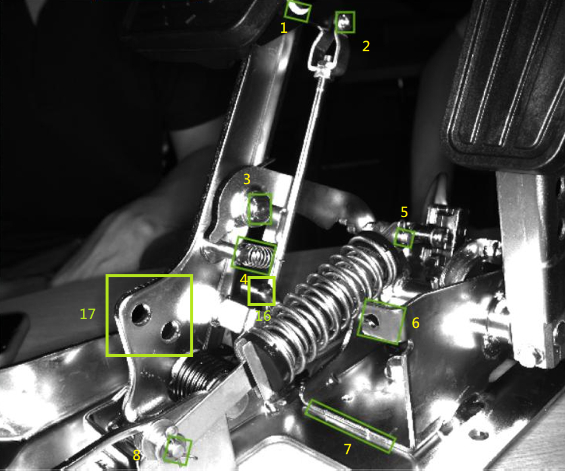
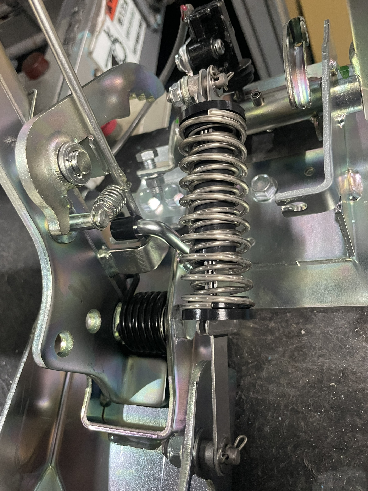
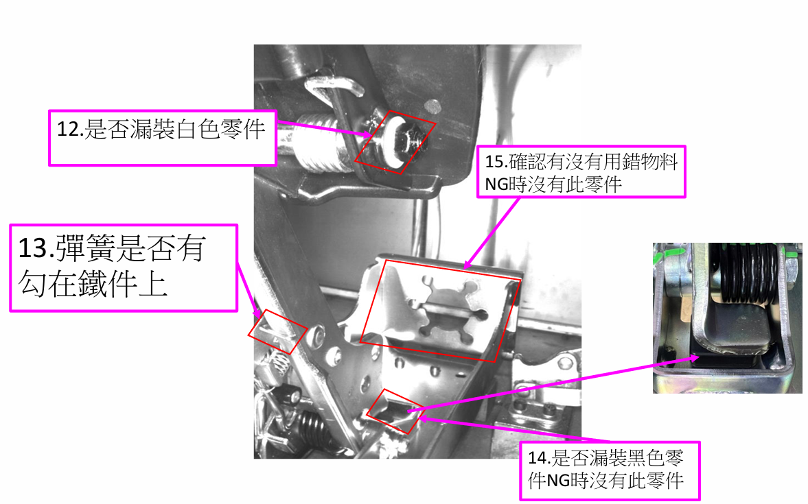

專案背景
至興為YAMAHA高爾夫球車踏板相關廠商，向青廷自動化採購影像辨識零件。設備使用德國 SICK 視覺AI LICENSE，結合 AOI（自動光學檢測）對零件安裝狀態進行逐項判定。
本案我的角色是：在設備出廠與現場驗收前，撰寫《影像辨識零件驗收標準》，確保雙方對每一項驗收點有一致的定義與判定標準，避免驗收現場產生認知落差。
本案亮點：同時涵蓋兩種機型（EL1088 / EL1089）的驗收標準，需分別針對每個機型的零件差異制定判定條件，最終彙整為一份通用但機型區分清楚的驗收文件，工作複雜度高於單一機型驗收。
雙機型說明
至興兩種機型，各有不同的零件組成與安裝規格：
EL1088
機型 A — 標準版
- 基礎零件配置
- 標準規格
- 驗收點涵蓋通用 17 項
- 以 SICK AOI +AI訓練進行逐項判定
EL1089
機型 B — 進階版
- 部分零件規格有差異
- 需獨立制定差異項目判定條件
- 驗收點與 EL1088 相同，判定條件部分不同
- 驗收文件需清楚標示機型差異
17 項驗收檢驗清單
以下為驗收標準書中涵蓋的 17 個檢驗項目：
1
零件存在確認
NG為無裝設零件
2
部件間隙大小
原訂為間隙實際要小於0.35mm才OK
3
缺件檢測
所有零件槽位均需安裝到位

交付物
- 影像辨識零件驗收標準書17 項逐項驗收標準，雙機型（EL1088 / EL1089）分別說明
- AOI 判定準則SICK 視覺系統各項判定參數說明與 NG 定義
- 問題追蹤紀錄（Issue Log）驗收過程中發現問題的追蹤記錄與解決狀態
圖片紀錄

SICK 視覺系統
AOI 設備外觀

EL1088 樣品
連接器機型 B

EL1089 樣品
連接器機型 B
驗收標準書
17 項檢驗文件